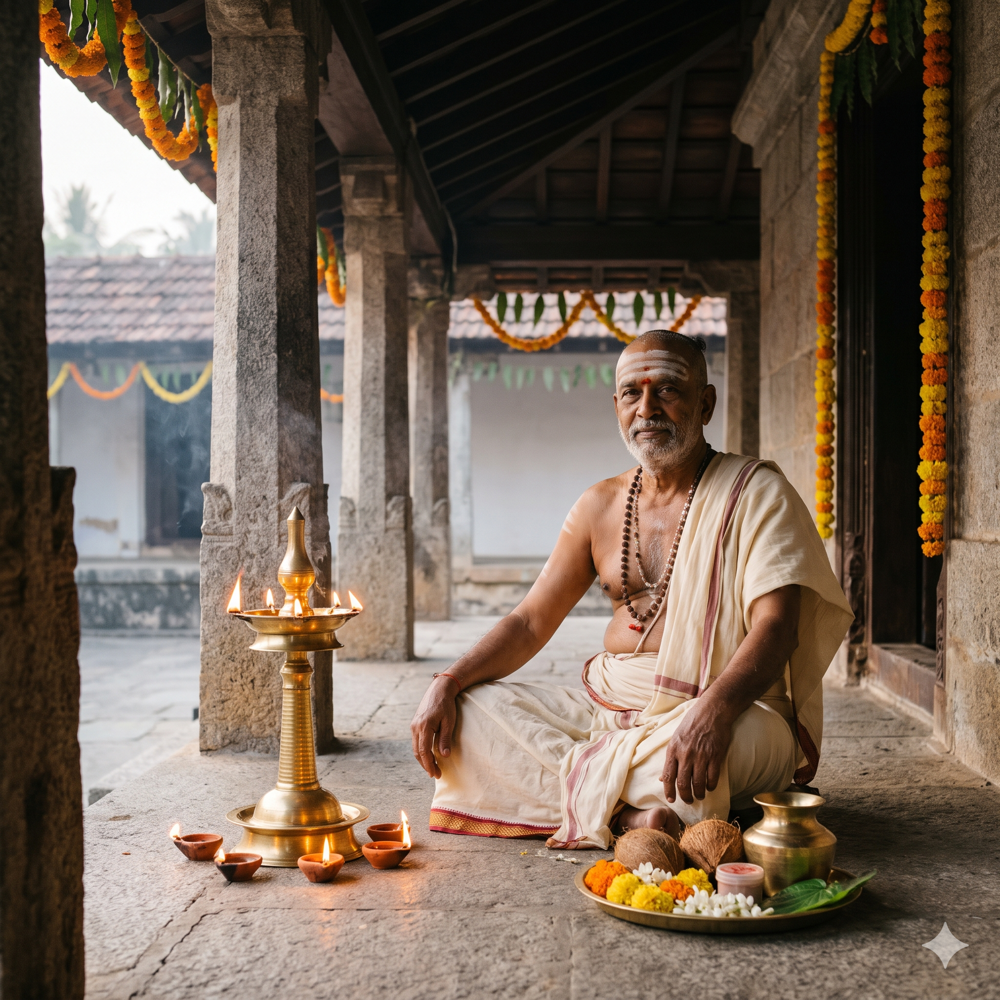

Sample Profile
Sample Profile
Acharya Raghavan S.
- ✦Experience: 14 Years
- ✦Specialization: Homam / Havan & Griha Pooja
- ✦Languages: Tamil, Sanskrit, English
- ✦Location: Madurai
- ✦Availability: Morning & Evening Slots
Explore priest profiles, pooja specializations, years of Vedic experience, spoken languages, service locations, and slot availability across Tamil Nadu.
Filter by priest name, city, ceremony specialization, or time slot availability.
Showing 6 of 6 sample priests
Sample Profile
 Sample Profile
Sample Profile
 Sample Profile
Sample Profile
 Sample Profile
Sample Profile

Sample Profile Sample Profile
Sample Profile
We couldn't find a sample priest matching your selected filters. Try changing your search or clearing the filters.
Priests in the directory are categorized by ceremonial domain so families can select practitioners experienced in their specific observance.
Ganapathi, Navagraha, Sudarshana, and Ayush fire rituals conducted with traditional mantra recitation.
Gruhapravesam, Vastu Shanthi, and new threshold blessings tailored for apartments and independent homes.
Engagement rituals, traditional weddings, Namakaranam, Annaprasana, and family milestone observances.
Satyanarayana Pooja, Varalakshmi Vratham, Saraswathi Pooja, and seasonal auspicious prayers.
Before appearing in the public directory, priest profiles undergo administrative review to verify ceremonial training, spoken languages, and regional service coverage.


Whether your household prefers mantras explained in Tamil, Sanskrit, Telugu, Kannada, Malayalam, or English, you can filter priests by city and language comfort.
Keep these three essentials ready when requesting a priest through your Devotee Dashboard.
Provide your target ceremony date and preferred morning or evening window so the priest can confirm availability.
Mention your family custom, gothram, and preferred language for explaining ritual steps to elders and guests.
Review the ceremony's Samagri checklist and confirm whether your household will arrange items directly.
Devotees can proceed directly to the booking portal, while practicing priests can access the Priest Workspace to manage availability and incoming requests.